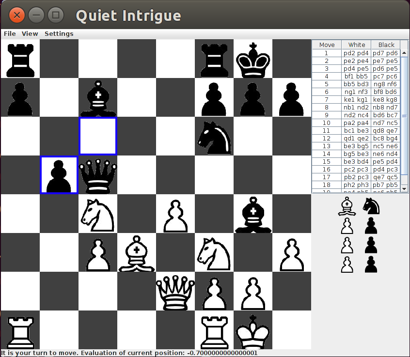

Writing a Chess AI
 I love writing AI when I can watch them learn and grow more intelligent. Chess is a great game for learning AI because there is a lot of literature available to get you started. At the same time there are massive scalability challenges, so good design is critical to building a strong engine.
Being the ambitious sort, I decided I wanted to write a chess engine because I was learning Java. I always learn a new language or framework best with a project and at the time it made sense to combine a game I liked with a new programming project. Of course when you consider the massive complexity of some open source chess engines (STOCKFISH LINK) you can see why this was no small task.
Being new to Java and chess programming in general I learned a lot and re-wrote the engine several times before coming up with anything resmbling an intelligent chess player.
That being said, I am rather proud of the engine I made. It beat me pretty consistently and my ELO rating was around 1400 at the time. It beat my friends and the Windows chess engine Chess Titan. Unfortunately it would still make strange mistakes now and then due to heuristic tuning errors. Example: compromising on king safety for a pawn grab.
Even so it was a terrificly fun project. Watching the AI learn chess and make increasingly intelligent moves was incredible. Eventually it started punishing my own mistakes pretty severely, and I have to play pretty carefully to beat it.
The source code for the project is on GitHub: https://github.com/mpvoss/Chess Disclaimer: I was new to Java and programming in general when writing this. There are many opportunities for improvement, to say the least!
Here’s what I learned on this journey:
Space-time tradeoff
I was correct about this.
As such, I decided to store the entire game-tree in memory for better performance.
I was horribly, horribly incorrect about this.
The game tree is simply too big, it grows at a rate of bd, where b is the branching factor (~35) and d is the depth to which you are searching. My JVM usually crashed after a depth of 4 or 5 ply (35^5 is about 52 million Move objects that I was storing in my tree).
The better approach is using a hashtable to store good moves as you find them. This has huge savings because it’s very common to see the same positions many times over the course of your search. Usually a specialized hashtable called a Transposition Table (LINK TO WIKIPEDIA) is used and there’s plenty of business logic about when you can remove a position from the table and how you handle collisions and whatnot.
With a transposition table my engine would be able to look much deeper than the pitiful 4 or 5 ply I was doing before. This would make a huge difference with the strength of the engine, and it's on my TODO list if I ever rewrite the engine for the umpteenth time.
Readability vs performance
Since I was learning Java I designed the engine in a very Object Oreinted way. I had a class for Pieces, Moves, etc. The game tree was a graph of moves, and to explore the board you had to make and unmake moves on a global board object (I was new to coding, I admit the design was horrendous). This made for mostly easy to read code, but it’s simply not how the top engines represent the game.
Most self-respecting engines use bitboards to represent the board. This is a 64 bit datatype (usually a long) that represent if a piece is on a square of not. You can have a white bishop bitboard, a black rook bitboard, etc. Each bit of the 64 is associated with a square on the board, and you can combine all the bitboards to see the entire position. The reason this is fast is because modern CPU’s use 64 bit registers, and when your entire board can be manipulated using bit shifting instructions on the CPU you can crunch positions insanely quickly.
I actually implemented this in an assignment where the goal was to solve a puzzle where you slid around tetris-looking pieces on a board. Code available here (https://github.com/mpvoss/BFS_Puzzle). The performance gains are real. My implementation with bitboards solved the puzzle in under 4 seconds. Other java implementations representing the board as char arrays or similar took 4 to 5 minutes to run. That said, you also end up with code like this:
// Bitmaps for squares where it is illegal to move left, right, down, or up
static long leftMoveBorder = 0xE0C088888080C0E0L;
static long rightMoveBorder = 0x0703214101010307L;
static long downMoveBorder = 0xC39130300081C3FFL;
static long upMoveBorder = 0xFFC39130300081C3L;
// Bitmaps for all pieces. If there is a 1 in the binary string for a spot,
// one of the piece's parts is on that square
private long[] pieces = {
0x0000C0C000000000L, // Red square
0x0C08000000000000L, // Orange L
0x00040C0000000000L, // Blue L
0x0000000080C00000L, // Bright green L
0x0000000060200000L, // Purple L
0x0000000818080000L, // Green Blue T
0x0000000406040000L, // Green T
0x0000000001030000L, // Weird bright Blue L
0x0000000000002030L, // Pink L
0x0000000000001808L, // Yellow L
0x0000000000000604L // Brown L
};
static long leftMoveBorder = 0xE0C088888080C0E0L;
static long rightMoveBorder = 0x0703214101010307L;
static long downMoveBorder = 0xC39130300081C3FFL;
static long upMoveBorder = 0xFFC39130300081C3L;
// Bitmaps for all pieces. If there is a 1 in the binary string for a spot,
// one of the piece's parts is on that square
private long[] pieces = {
0x0000C0C000000000L, // Red square
0x0C08000000000000L, // Orange L
0x00040C0000000000L, // Blue L
0x0000000080C00000L, // Bright green L
0x0000000060200000L, // Purple L
0x0000000818080000L, // Green Blue T
0x0000000406040000L, // Green T
0x0000000001030000L, // Weird bright Blue L
0x0000000000002030L, // Pink L
0x0000000000001808L, // Yellow L
0x0000000000000604L // Brown L
};
Great performance? Absolutely. Easy to read? Oh heavens no. That being said, I would love to see how strong my engine could be if it really leveraged the 64 bit CPU it was running on. This is also on the TODO list if the rewrite ever happens.
Awesome resources I used on this project:
- https://chessprogramming.wikispaces.com/